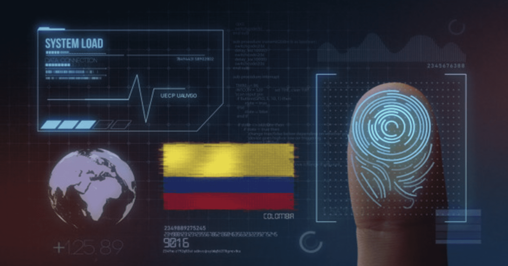

ARTÍCULOS
Explorando la Intersección: La Perspectiva del Artista Visual sobre la Tecnología Moderna
Óscar Tabares • Mayo 25, 2024 • Lectura 10 min
En el vasto lienzo de la modernidad, la tecnología emerge como un pigmento innovador que redefine constantemente los límites de la creatividad humana. Para el artista visual contemporáneo, esta amalgama de circuitos y código no es solo una herramienta, sino un lienzo en sí mismo, una paleta infinita de posibilidades que desafía las convenciones y expande el alcance de la expresión artística. Desde el prisma de la creatividad, la tecnología moderna es más que una simple herramienta; es un medio para explorar nuevas fronteras de la percepción. Los avances en realidad virtual y aumentada permiten al artista sumergirse en mundos imaginarios, desdibujando la línea entre lo real y lo imaginario, entre lo tangible y lo abstracto. Sin embargo, en este reino de la innovación, también yace una dualidad inherente. Para algunos artistas, la tecnología moderna puede representar una amenaza a la autenticidad y la intimidad del proceso creativo. La omnipresencia de las pantallas y la digitalización de la experiencia humana pueden alienar al individuo del mundo tangible que inspira el arte. A pesar de estas tensiones, el artista visual encuentra en la tecnología moderna un aliado poderoso, un socio en la búsqueda de la expresión y la exploración del universo interior y exterior. Ya sea a través de la manipulación digital de imágenes o la creación de instalaciones interactivas, la tecnología no solo amplía el alcance del arte, sino que también desafía al artista a repensar su relación con el espectador y el mundo que lo rodea. En última instancia, la percepción del artista visual sobre la tecnología moderna es tan diversa como las pinceladas en su lienzo. Para algunos, es un catalizador de la innovación y la expresión; para otros, una fuerza que amenaza con eclipsar la esencia misma del arte. Sin embargo, en este diálogo en constante evolución entre lo analógico y lo digital, la tecnología sigue siendo una musa inagotable que impulsa al artista a explorar nuevos horizontes de la creatividad y la imaginación.
Desarrollo de Páginas Web Impulsado por IA: Abriendo Nuevas Fronteras en la Experiencia del Usuario
Óscar Tabares • Febrero 15, 2024 • Lectura 10 min
En el siempre cambiante paisaje digital, la inteligencia artificial (IA) se ha convertido en un catalizador para la evolución del desarrollo web. Al aprovechar el poder del aprendizaje automático y el procesamiento del lenguaje natural, los diseñadores y desarrolladores web están explorando nuevas formas de crear experiencias más intuitivas y personalizadas para los usuarios. La integración de la IA en el desarrollo de páginas web abre un abanico de posibilidades emocionantes. Desde la optimización del diseño hasta la mejora de la experiencia del usuario, la IA se está convirtiendo en una herramienta indispensable para aquellos que buscan impulsar la innovación en la web. Uno de los aspectos más intrigantes del desarrollo web impulsado por IA es su capacidad para personalizar la experiencia del usuario de manera dinámica. Mediante el análisis de datos y el aprendizaje automático, las páginas web pueden adaptarse en tiempo real según las preferencias y el comportamiento del usuario, ofreciendo contenido relevante y funcionalidades personalizadas. Además de la personalización, la IA también está revolucionando la forma en que se crea y gestiona el contenido en línea. Los sistemas de generación de contenido impulsados por IA pueden ayudar a los desarrolladores a crear contenido de manera más eficiente y a escala, desde textos hasta imágenes y vídeos, liberando tiempo para centrarse en la estrategia y la creatividad. Sin embargo, como con cualquier avance tecnológico, el desarrollo de páginas web impulsado por IA plantea desafíos y consideraciones éticas. Desde la privacidad de los datos hasta la transparencia en el uso de algoritmos, es fundamental abordar estos aspectos para garantizar que la IA se utilice de manera ética y responsable en el desarrollo web. En última instancia, el desarrollo de páginas web impulsado por IA representa una emocionante convergencia entre la tecnología y la creatividad. Al aprovechar el poder de la IA, los diseñadores y desarrolladores web están abriendo nuevas fronteras en la experiencia del usuario, creando un futuro digital más inteligente, personalizado y emocionante para todos.
Seguridad Informática en Colombia: Navegando los Desafíos de un Mundo Digital en Evolución
Óscar Tabares • Diciembre 12, 2023 • Lectura 7 min

En la era digital, Colombia se encuentra en la encrucijada de la innovación tecnológica y los desafíos de seguridad informática que acompañan este progreso. Con una creciente dependencia de la tecnología en todos los ámbitos de la vida, desde el gobierno hasta el sector privado y la vida cotidiana, la protección de los datos y la infraestructura digital se ha convertido en una prioridad crítica para el país. Los ciberataques y las amenazas cibernéticas representan una preocupación creciente en Colombia. Desde el robo de datos confidenciales hasta el sabotaje de infraestructuras críticas, la seguridad informática es un campo de batalla en constante evolución donde los actores malintencionados buscan explotar vulnerabilidades y debilidades en la red. Para abordar estos desafíos, Colombia está intensificando sus esfuerzos en materia de seguridad informática. Desde la implementación de políticas y regulaciones más estrictas hasta la promoción de la conciencia y educación en seguridad cibernética, el país está adoptando un enfoque integral para proteger su infraestructura digital y sus ciudadanos. Además de las medidas gubernamentales, el sector privado también desempeña un papel crucial en la protección contra las amenazas cibernéticas. Las empresas colombianas están invirtiendo en tecnologías avanzadas de seguridad, como firewalls, cifrado de datos y soluciones de detección de intrusos, para proteger sus activos digitales y garantizar la confidencialidad y la integridad de la información. Sin embargo, la seguridad informática es un desafío que nunca se resuelve por completo. Con la evolución constante de las tecnologías y las tácticas de los ciberdelincuentes, Colombia debe seguir siendo proactiva en su enfoque hacia la seguridad cibernética. La colaboración entre el gobierno, el sector privado y la sociedad civil es fundamental para mantenerse un paso adelante en la lucha contra las amenazas cibernéticas y garantizar un futuro digital seguro y próspero para todos los colombianos.